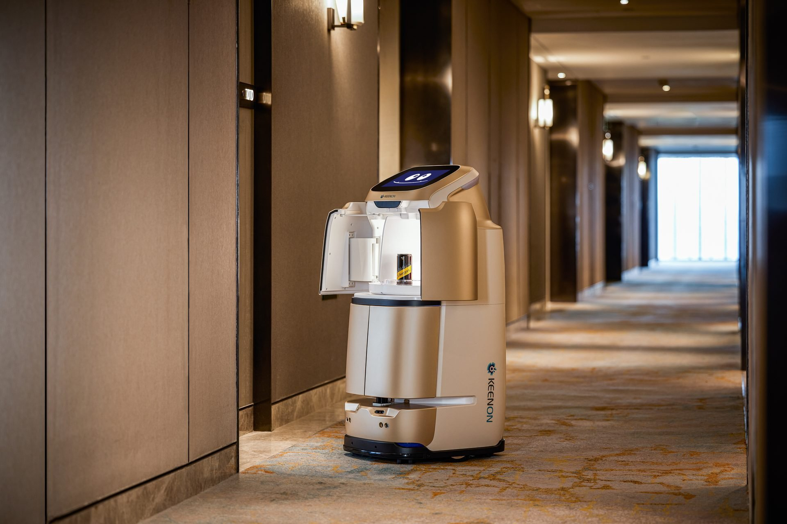
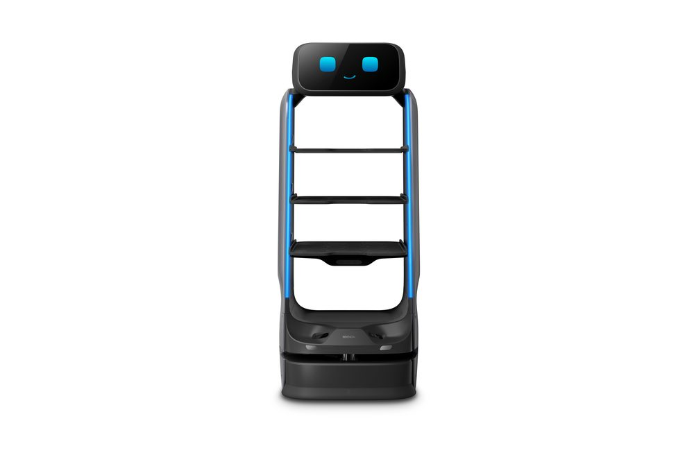
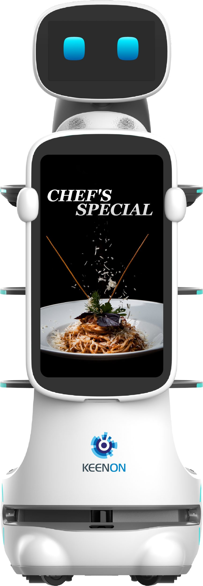
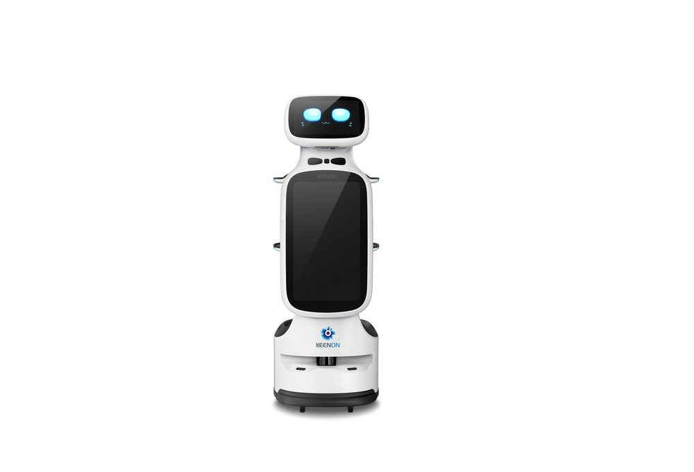
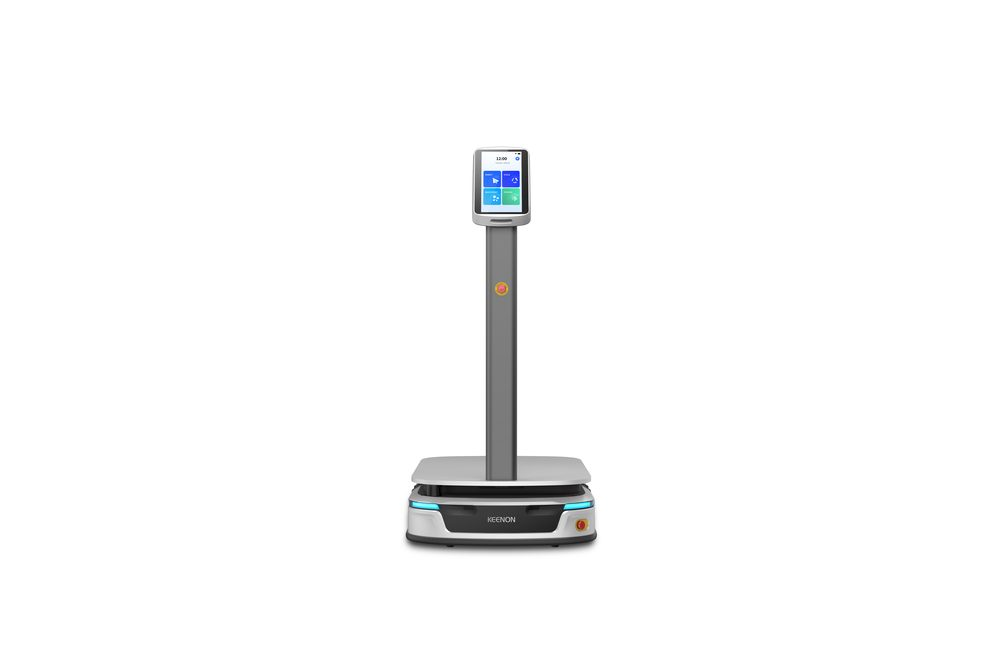
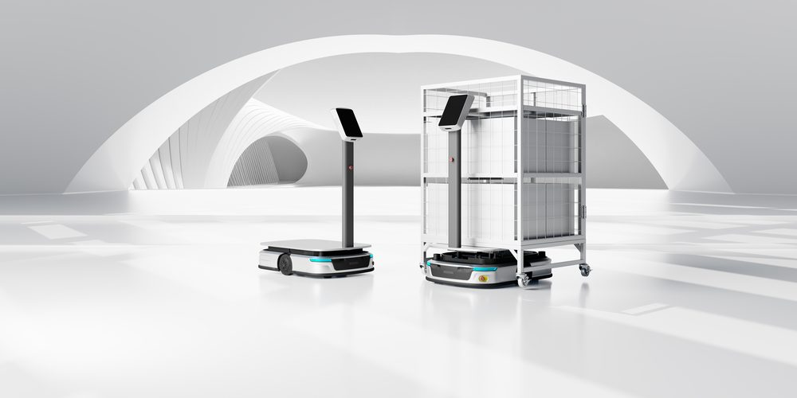

Roboter übernehmen Room-Service, Gepäcktransport und Reinigungsunterstützung, damit Ihr Team sich auf die Gäste konzentrieren kann.
In Hotels kommen je nach Haus praktisch alle Systeme zum Einsatz – von Roomservice über Reinigung bis Gepäck- und Wäschetransport.

Diskreter Mehretagenlieferer mit 90L Volumen, inkl. Aufzugsteuerung.

Für Roomservice und gehobene Gastronomie im Haus.

Hohe Tragfähigkeit für Bankett- und Konferenzbereiche.

Liefer- und Abräumroboter für Lobby und Frühstücksraum.

Optimiert für enge Gänge ab 49 cm.

Kompakter Reiniger für Flure und Zimmerbereiche.

4-in-1 Bodenreiniger für Flächen bis 4.500 m².

Gepäck- und Wäschetransport bis 100 kg.

Für besonders große Lasten bis 300 kg.
Ja. Transportwege und Materiallogistik lassen sich zuverlässig automatisieren.
BUTLERBOT W3, DINERBOT T9 Pro & KLEENBOT C30 im